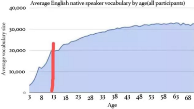

English Vocabulary 英语读报 - 单词记忆研究所
en0.0.4
How Many Words do Native English Speakers Absorb by Age?

The researchers found that native adult speakers of English understand an average of 20,000 to 30,000 vocabulary words, and native speakers learn about one word a day from ages 16 to 50.
- Most adult native test-takers have a vocabulary range of about 20,000-35,000 words
- Average native test-takers of age 8 already know 10,000 words
- Average native test-takers of age 4 already know 5,000 words
- Adult native test-takers learn almost 1 new word a day until middle age
- Vocabulary growth stops at middle age
- (English) 171,476 words in current use, and 47,156 obsolete words; 615,100 definitions
- Foreign test-takers tend to reach over 10,000 words by living abroad
- Foreign test-takers learn 2.5 new words a day while living in an English-speaking country
- In a separate post, though, comes a surprising fact: the reading of fiction specifically is as important as reading generally. People who read "lots" and fiction "lots" outscore those who read "lots" but fiction only "somewhat" or "not much". This is because a wider range of vocabulary is typically used in fiction than in non-fiction writing.
* According to
economist,
wordcounter.io,
lexico
背单词
1. 使用DIY单词王背单词
TOEFL等高分的关键，听力要好，词汇量要大，迅速记笔记。
听力/口语/词汇/阅读/写作/
wordKing.html (words.js, known.js) 只需要把这三个文件右击，链接另存为 到本地，使用chrome浏览器打开，即可使用！
- 单击可查词典，勾记住的单词;
- 点顶部提交，弹出新窗口，全是勾选过的单词;
- 粘贴到js的known数组中，刷新就能屏蔽已记单词。
后续会研究整理出cet4-6词汇表等list。替换掉words.js中的数组即可。
2. 使用 刷单词神器 背单词
刷单词神器: 是一个用python写的，基于mysql数据库的本地python web的刷单词工具。
名词 n.
- compendium paradigm xenograft metastasis keratinocyte myeloma rhythmicity oscillation circadian circuit |
- concordance epidemiology perturbation mitosis meiosis mitochondria polyadenylation adenosine consensus proliferation |
- cardiac intestine thymidine adenocarcinoma squamous carcinoma disparity prostate gland mucus bladder |
- magnetic resonance; trajectory interplay hypoxia lethality senescence apoptosis inflammation quiescence
- tumorigenesis neurogenesis pathogenesis homeostasis artifact
- perspective standpoint
形容词 adj.
- heterogeneous phylogenetic dysplastic eukaryotic hepatocellular transient
- nascent auxiliary canonical cryptic pervasive prevalent stochastic aberrant
- putative pancreatic ductal discrete attributable prospective
- demographic peripheral homeostatic unprecedented analogous hematopoietic oscillatory
- distal proximal endogenous elusive promiscuous spontaneous cardinal conceivable
副词 adv.
- empirically intriguingly peripherally
动词 v.
- schematize attenuate dissect entangle disentangle interrogate instigate elucidate disrupt orchestrate |
- incorporate reside abrogate encompass anticipate leverage decipher illuminate evade delineate |
- underpin confer facilitate speculate envisage implicate
词组 phrase
temporal and spatial context; 时空表达
We speculate that processes requiring fast responses during the cell cycle may utilize rapid mRNA decay to allow better fine-tuning of temporal expression patterns.
Word list (within sentences)
2021.1
- He was obliged to resign when one of his own aides was implicated in a financial scandal.
他因一名助手涉入一起金融丑闻案而被迫辞职。
- xx
2019
- The lion will often stalk its prey for hours. 狮子经常悄然跟踪猎物达几个小时。
- He could feel his fingers growing numb at their tips. 他能感觉到他的手指尖正在变得麻木。
- Education is not filling of a pail but lighting of a fire. 教育的目的不是要灌满桶里的水，而是引燃一堆篝火。
- She began to rack her brains to remember what had happened at the nursing home. 她开始绞尽脑汁地回忆在疗养院发生的事。
- Their daily diet consisted of a lump of stale bread, a bowl of rice, and stale water. 他们的日常饮食包括一块不新鲜的面包、一碗米饭，还有不新鲜的水。
- I felt wretched about the way things had turned out. 事情落了这么个结局，我感到很难受。
- Animals get tangled in fishing nets and drown. 动物被缠在渔网里淹死了。
- He brought his arm up in a futile attempt to ward off the blow. 他出于挡住这一击的无谓企图抬起了他的胳膊。